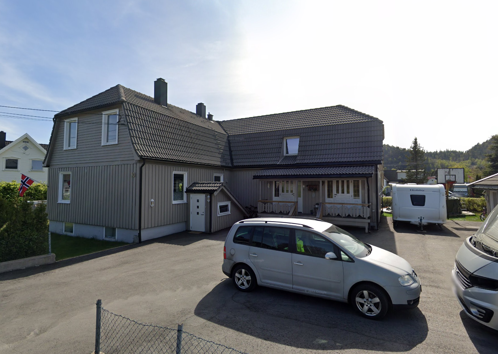

Jeg bor i Vennesla på Moseidmoen. Under kan du se et bilde av huset mitt. Jeg har bodd her nesten hele livet, men da jeg var 1 år gammel, bodde vi et annet sted i Vennesla, noe jeg naturligvis ikke husker.
Huset ligger relativt sentralt, med kun 5 minutters gange til nærmeste butikk, og 20 minutter til fots til Vennesla sentrum. Det tar også omtrent 20 minutter med bil til Kristiansand. Det går busser her omtrent hver time, så jeg har muligheten til å ta buss når det trengs.
